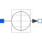

TableCurrentCurrent source by linear interpolation in a table |

|
Diagram
{kind=link}
Information
This information is part of the Modelica Standard Library maintained by the Modelica Association.
This current source uses the corresponding signal source of the Modelica.Blocks.Sources package. Furthermore, an offset parameter is introduced, which is added to the value calculated by the blocks source. The startTime parameter allows to shift the blocks source behavior on the time axis.
This block generates a current source by linear interpolation in a table. The time points and current values are stored in a matrix table[i,j], where the first column table[:,1] contains the time points and the second column contains the current to be interpolated. The table interpolation has the following properties:
- The time points need to be monotonically increasing.
- Discontinuities are allowed, by providing the same time point twice in the table.
- Values outside of the table range, are computed by extrapolation through the last or first two points of the table.
- If the table has only one row, no interpolation is performed and the current value is just returned independently of the actual time instant, i.e., this is a constant current source.
- Via parameters startTime and offset the curve defined by the table can be shifted both in time and in the current.
- The table is implemented in a numerically sound way by generating time events at interval boundaries. This generates continuously differentiable values for the integrator.
Example:
table = [0 0
1 0
1 1
2 4
3 9
4 16]
If, e.g., time = 1.0, the current i = 0.0 (before event), 1.0 (after event)
e.g., time = 1.5, the current i = 2.5,
e.g., time = 2.0, the current i = 4.0,
e.g., time = 5.0, the current i = 23.0 (i.e., extrapolation).
Furthermore, an offset parameter is introduced, which is added to the value calculated by the blocks source. The startTime parameter allows to shift the blocks source behavior on the time axis.
Parameters (3)
Connectors (2)
| p |
Type: PositivePin Description: Positive electrical pin |
|
|---|---|---|
| n |
Type: NegativePin Description: Negative electrical pin |
Components (1)
| signalSource |
Type: TimeTable |
|---|